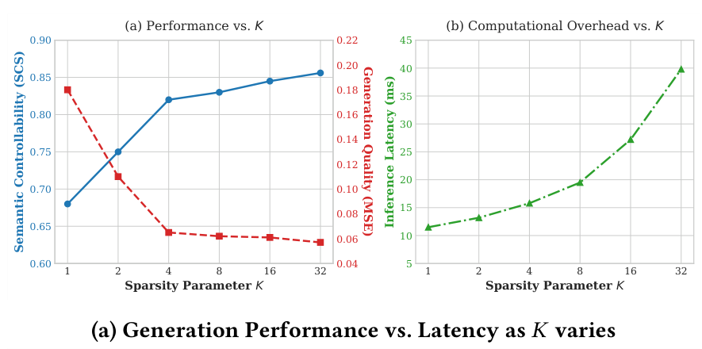

Baselines
Three families
GANs — TimeGAN, WGAN, QuatGAN. Diffusion — GBMDiff, FinDDPM. Conditional / LLM-based — TimeDiT, TimeLLM, CALF, T2S.
Complete evaluation
Every number below is transcribed from the CIKM ’26 paper. Test segments are evaluated on strictly calendar-aligned horizons — Monday-to-Sunday for weekly segments and natural calendar months — rather than the sliding windows used during training. Lower is better for MSE, MAE, tail index error, volatility-clustering error, leverage error and CVR; higher is better for SCS and the human score.
Table 2 — generation fidelity
Bold = best in column · underline = second best · * = conditional (text-controlled) architecture
Table 3 — aggregate
Averaged over all six datasets and the 7 / 14 / 30-day horizons
Table 4 — ablation
Denoising MSE, semantic controllability, event execution and physical-constraint violation
Routing analysis


Experimental setup
Baselines
GANs — TimeGAN, WGAN, QuatGAN. Diffusion — GBMDiff, FinDDPM. Conditional / LLM-based — TimeDiT, TimeLLM, CALF, T2S.
Backbone
Hidden states from all L = 32 layers act as the semantic codebook; the LLM is never fine-tuned. RoutDiT runs 12 transformer layers at width 768 with 12 attention heads partitioned into 4 / 4 / 4 frequency groups, selecting Top-K = 5 LLM layers, with K = 1000 diffusion steps.
Training
Trained on 8× NVIDIA A800 (80GB) with AdamW, learning rate 1×10−4, batch size 64. The TF-CVAE uses 4 orthogonal causal ResBlocks, a 4-channel latent space, 2 LQA layers, Haar level-4 wavelets, and cyclical KL annealing (β: 0 → 0.01). λKL = 0.01, λLB = 0.05.
Citation
@inproceedings{zhang2026fincodit,
title = {Exploring Semantics-Frequency Alignment in Diffusion Transformers for Financial Time Series Generation},
author = {Zhang, Yingxiao and Duan, Jiaxin and Zhang, Junfu and Zou, Yue and Feng, Ke},
booktitle = {Proceedings of the 35th ACM International Conference on Information and Knowledge Management (CIKM '26)},
year = {2026},
publisher = {Association for Computing Machinery},
doi = {10.1145/3799682.3841011}
}